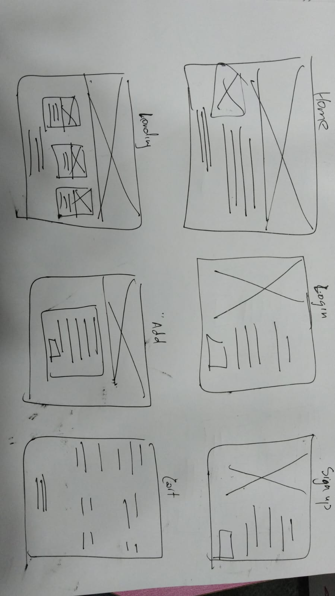
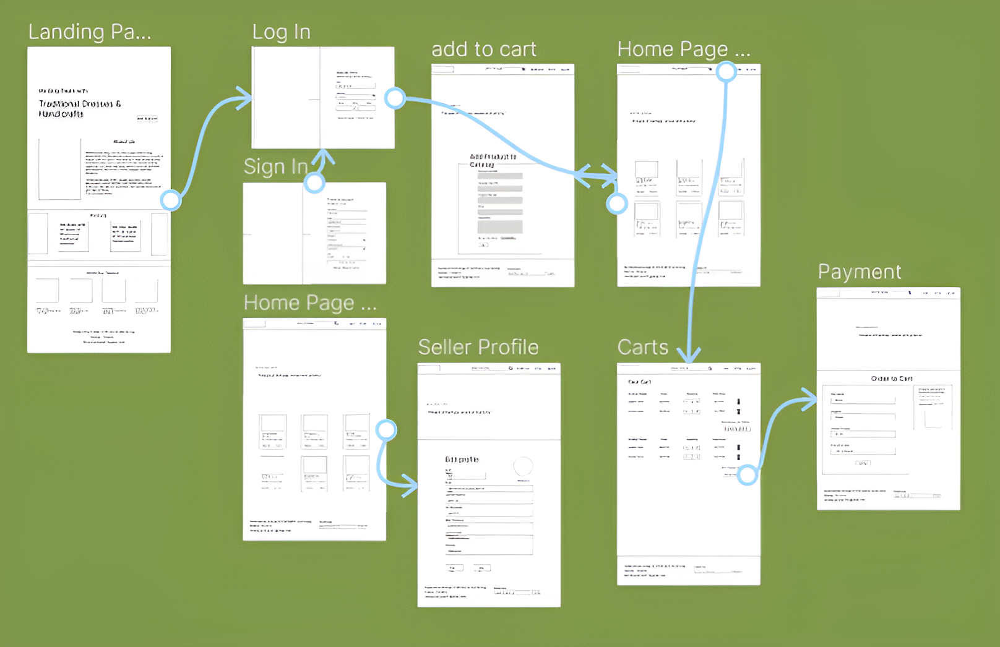
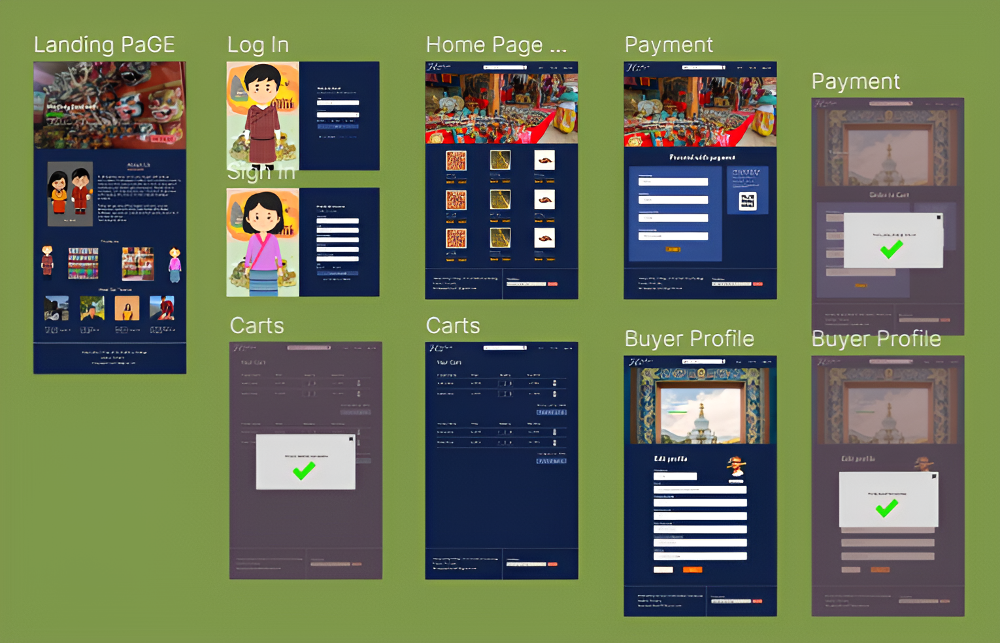
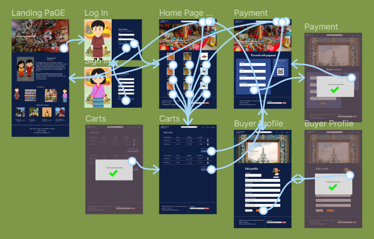
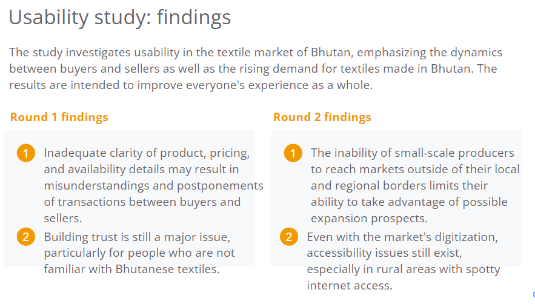

User Persona

App for Bhutanese Textile Website for multiple buyer and seller
Feburary 2024 to May 2024
A joined marketplace is necessary for Bhutanese textile aficionados and artists to purchase and sell traditional textiles from Bhutan. It is now difficult for buyers to find genuine textiles and for sellers to attract a wider audience due to the fragmented nature of the business and lack of a dependable internet presence.
Create an app that links buyers and sellers of textiles from Bhutan, offering a smooth and culturally immersive shopping experience. Simple navigation, safe transactions, and thorough biographies of craftsmen and their creations should all be made possible by the app.
As the lead designer, my role in the Bhutan Textile project was to oversee the design process from conception to implementation. This included conducting research, creating initial design concepts, iterating on prototypes based on user feedback, and developing high-fidelity mockups of the final designs.
User Research, Wireframing, Prototyping
The target audience comprised both buyers and sellers involved in the Bhutanese textile market, including artisans, retailers, and consumers. The platform aimed to cater to users with varying levels of digital literacy and cultural backgrounds.
Key challenges included addressing digital accessibility barriers in remote areas, establishing trust and authenticity in online transactions, and ensuring cultural sensitivity in design elements. Additionally, navigating the balance between tradition and modernization posed a unique constraint in preserving the cultural heritage of Bhutanese textiles.
Buyers: Buyers find it difficult to locate genuine Bhutanese textiles and to verify the legitimacy and quality of products when they shop online. In order to foster trust and provide transparency, this knowledge will direct the design to incorporate artisan biographies, thorough product descriptions, and safe transaction procedures.
For Sellers: It might be challenging for sellers to successfully showcase their skills and reach a wider audience. In order to help sellers draw in and interact with potential customers, the design will going ahead concentrate on developing thorough seller biographies, user-friendly listing tools, and elements that showcase the distinctive qualities of their fabrics.
Create a visual representation that stakeholders can use to provide feedback and guide the development of the digital platform.
Create a visual prototype that accurately represents the functionalities and layout of the digital platform,
allowing stakeholders to visualize the final product and provide feedback.
Home Screen: They have options to explore different categories such as traditional weaves, modern designs, and artisan showcases.
Product listing: Each product listing includes basic information such as name, image, price, and seller details.
Product details: Here, they can view more images of the product, read a description, see pricing details, and view seller information.
Cart Screen: Users can add the product to their cart directly from the product details page.A confirmation message appears, indicating successful addition to the cart.
Home Screen: They have options to explore different categories such as traditional weaves, modern designs, and artisan showcases.
Product listing: Each product listing includes basic information such as name, image, price, and seller details.
Product details: Here, they can view more images of the product, read a description, see pricing details, and view seller information.
Cart Screen: Users can add the product to their cart directly from the product details page.A confirmation message appears, indicating successful addition to the cart.
The study investigates usability in the textile market of Bhutan, emphasizing the dynamics between buyers and sellers as well as the rising demand for textiles made in Bhutan. The results are intended to improve everyone's experience as a whole.
The Bhutanese textile market's customer experience and happiness have been significantly improved by the user-friendly designs, as evidenced by positive feedback.
The project brought to light the importance of accessibility and user feedback in design, as well as the potential and difficulties associated with designing for a culturally varied market.